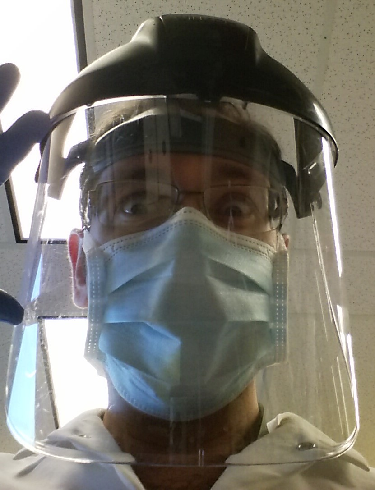

EDUCATION AND DEVELOPMENT
Formal Education:
- 2019 – Present University of Victoria:
Bachelor of Science (B.Sc.) in Computer Science (3rd year standing) - 2015 – 2018 University of Alberta:
Master of Science (M.Sc.) in Experimental Surgery - 2009 – 2013 Grant MacEwan University:
Bachelor of Science (B.Sc.) in Biological Sciences
Professional Development Courses:
- 2017 Grant MacEwan University:
The Basics of Project Management (PRDV 0819)
Stakeholder, HR and Communications (PRDV 0849) - 2016 University of Alberta:
Laboratory Safety
Concepts in Biosafety
Workplace Hazardous Materials Information System (WHMIS) - 2013 Alberta Health Services:
Good Clinical Practices and Best Practices when Managing Clinical Trials v. January 2010 (GCP)
Investigator Safety Training v. 2.0, November 24, 2009
Awards and Scholarships
- 2016 Cancer Research Institute of Northern Alberta (CRINA) Best Poster Award
- 2016 Faculty of Graduate Studies and Research Graduate Travel Award
- 2012 Jason Lang Scholarship
- 2011 Jason Lang Scholarship
- 2011 MacEwan University Arts and Science Faculty Scholarship
Relevant Career Experience
08/2015 – 07/2018 Otolaryngology – Head and Neck Surgery Research Laboratory of Alberta (OHRLA)
Edmonton, Alberta, Canada
10/2017 – 07/2018 Research Assistant
08/2015 – 06/2018 Experimental Surgery Postgraduate Research Project (M.Sc.)
Role involved the development and conduction of experiments studying the effects of novel chemotherapeutics on HPV-positive and HPV-negative head and neck cancers.
Key experiences:
- Cell line culture and maintenance, DNA, RNA, and protein extraction (protein extraction emphasizes histone extraction using acid), SDS polyacrylamide protein gel electrophoresis, Western Blotting, immunofluorescence-based assays and microscopy, RT-PCR, Droplet Digital PCR (ddPCR), MTT assays, Annexin V and Propidium iodide assays, wound healing assays, protein quantification utilizing nanodrop and BCA assays, aseptic technicque
- NCBI BLAST searches and application for protein structure and primer design
- Experimental design, implementation, data analysis, and reporting
- Standard operating procedure (SOP) validation and design
- Adherence to Laboratory Health and Safety procedures
- Management of multiple projects with strict timelines, budgets, and resource availabilities
- Produced and delivered several scientific presentations at conferences at both local and international venues
- Training students and coworkers
08/2014 – 08/2016 Alberta Health Services
Edmonton, Alberta, Canada
Clerk IV
Relief for various administrative positions including Clerk II-IV, Secretary II, and Unit Clerk within the Kaye Edmonton Clinic and University of Alberta Hospital. Developed new procedural changes to the Spine Assessment Clinic following transfer to new EMR system.
Key experiences:
- Healthcare administrative duties including medical transcription, consultation and procedure scheduling, and form design
- Optimization and implementation of SOPs
- Training new staff
03/2015 – 09/2015 John Simon and Associates Ltd
Edmonton, Alberta, Canada
Consultant, Data Auditing and Entry
Aided orthodontic research enterprise SmileSonica as a third-party consultant with data auditing and entry of clinical research case report forms (CRFs) into database in support of a regulatory approval application.
Key experiences:
- Data auditing and entry
09/2013 – 06/2015 Otolaryngology – Head and Neck Surgery, Dr. Daniel O’Connell
Edmonton, Alberta, Canada
Medical Office Assistant
Tasks included filing and related administrative work, implementation of administrative optimization procedures within the office, booking/informing patient referrals, as well as conducted clinical days for Dr. O’Connell’s practice.
Key experiences:
- Healthcare administrative duties including medical transcription, consultation and procedure scheduling, and form design
- Optimization and implementation of SOPs, surgical database creation and maintenance
- Training new staff
11/2013 – 01/2014 Royal Alexandra Hospital, Cardiology Research
Edmonton, Alberta, Canada
Research Assistant
Research Assistant under principal investigators Dr. M. Dorsch and Dr. N. Wahab. Initially a voluntary position (see below) small grant allowed funding October 2013 – January 2014.
Key experiences:
- Data gathering, filing, statistics, and database entry procedures for various clinical research databases, registries, and CRFs
- Assisted with patient selection and recruitment for various clinical trials
Additional (non-relevant) work experience available upon request
Additional Relevant Competencies
- 13 abstract publications, 6 peer-reviewed journal publications, 1 thesis, and 1 book chapter
- Audited, coordinated, and introduced efficiency standards in various medical offices within a team setting
- Contribution to the coordination of conference-style events
- Produced and maintained accurate records
- Maintained an excellent rapport with patients and coworkers
- Source/Version control using GitHub/GitLab
- Database creation and entry utilizing Excel and Microsoft Access, knowledge of SQL (with intent to learn more)
- Familiar with HTML5 and CSS3 languages, graphic design and photo manipulation Adobe Photoshop and Illustrator
- Familiar with C, object-oriented programming utilizing Python and Java
- Experience with application of statistical analysis using StataMP, Microsoft Office Suite, various electronic medical record (EMR) applications, various proprietary applications, and several field-specific data analysis applications
Volunteer Experience
07/2017 – 08/2017 General Surgery Medical Observership, Dr. Walter Yakimets
Edmonton, Alberta, Canada
Observing Student
11/2016 – 05/2017 First Annual Department of Surgery Graduate Student Research Day
Edmonton, Alberta, Canada
Planning Committee Member
07/2016 – 08/2016WISEST/HYRS
Edmonton, Alberta, Canada
Mentor
03/2013 – 02/2016 Boys and Girls Clubs Big Brothers Big Sisters of Edmonton & Area
Edmonton, Alberta, Canada
Mentor/Student Representative/Recruiter
06/2013 – 08/2014 Royal Alexandra Hospital, Cardiology Research
Edmonton, Alberta, Canada
Research Assistant
Additional volunteer experience available upon request